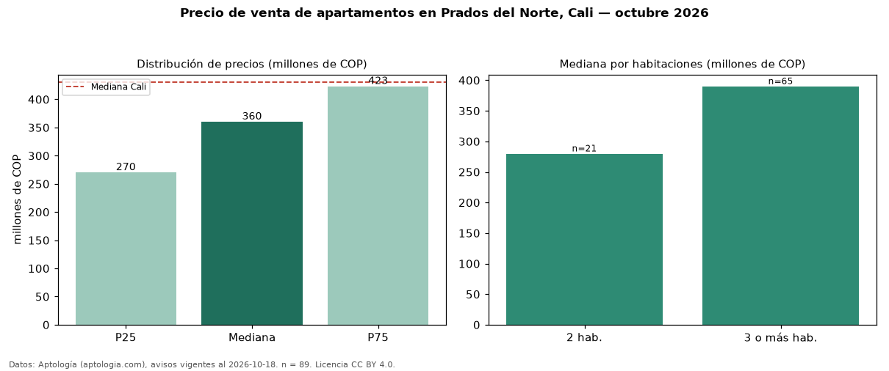

Precio de venta de apartamentos en Prados del Norte, Cali — octubre 2026
COP 360 millones es el precio mediano de apartamentos en venta en Prados del Norte, Cali (n = 89 avisos). Eso es 16 % por debajo de la mediana de Cali para apartamentos (COP 430 millones). Por metro cuadrado, la mediana es COP 4,34 millones/m² (n = 88 avisos con área), 7 % por debajo de Cali (COP 4,65 millones/m²). El área mediana anunciada es 74 m². El segmento con más oferta es el de 3 o más habitaciones (65 avisos, mediana COP 390 millones); pasar de 2 habitaciones a 3 o más habitaciones cambia la mediana +39 %. La administración mediana declarada es COP 430.000 al mes (n = 75). Por precio mediano es el puesto 40 de 66 barrios de Cali con al menos 30 avisos de apartamentos en venta (COP): en la franja media. El estrato más frecuente es 4 (49 % de los avisos con estrato). Datos: Aptología (aptologia.com), CC BY 4.0 — https://www.aptologia.com/venta/cali/prados-del-norte. Archivos: PDF, CSV con las cifras y gráfica PNG.

| Avisos únicos | 89 |
|---|---|
| Percentil 25 | COP 270.000.000 |
| Mediana | COP 360.000.000 |
| Percentil 75 | COP 423.000.000 |
| Mediana por m² | COP 4.338.797 |
Fuente: avisos vigentes de portales inmobiliarios recopilados por Aptología, deduplicados (mínimo 30 avisos únicos por celda). Precios pedidos, no cerrados. Fecha: 2026-10-18.